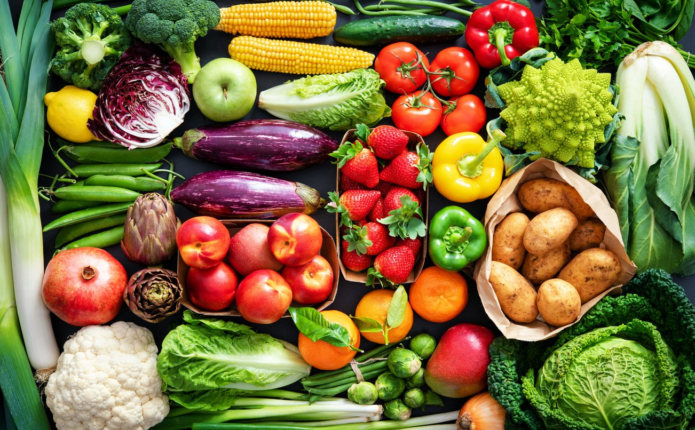

Our Facilities
Our Facilities Is Best Here

Fatilizer
Made from Desi Cows' Dung Composted Naturally; Enriched with Gau-Mutra and Beneficial Bacteria; Suitable for All Plants : Vegetables, Fruits, Flowers, Lawn.
Tractor
Tractors are generally associated with farming as farmers use them alongside machinery to perform implements like ploughing, tilling, sowing, and harrowing. In addition, a tractor is used for pushing or pulling the machinery, thereby making the farming operations more convenient.

Tasty and Healthy Food
Real farmers share their favorite farm recipes. · Pork Chops with Scalloped Potatoes · Farmer's Casserole · Old-Time Buttermilk Pie · Dutch Honey .